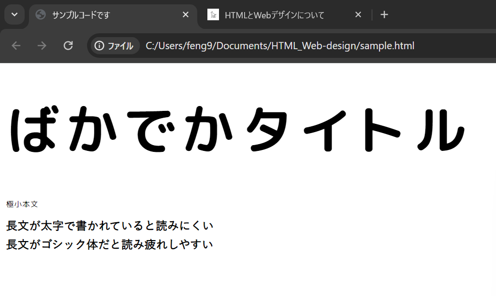
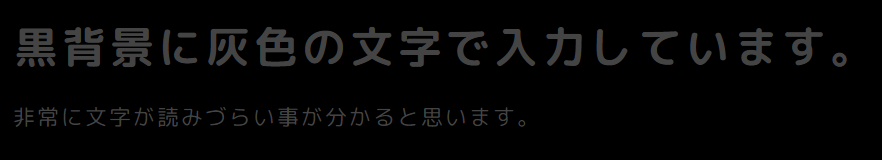
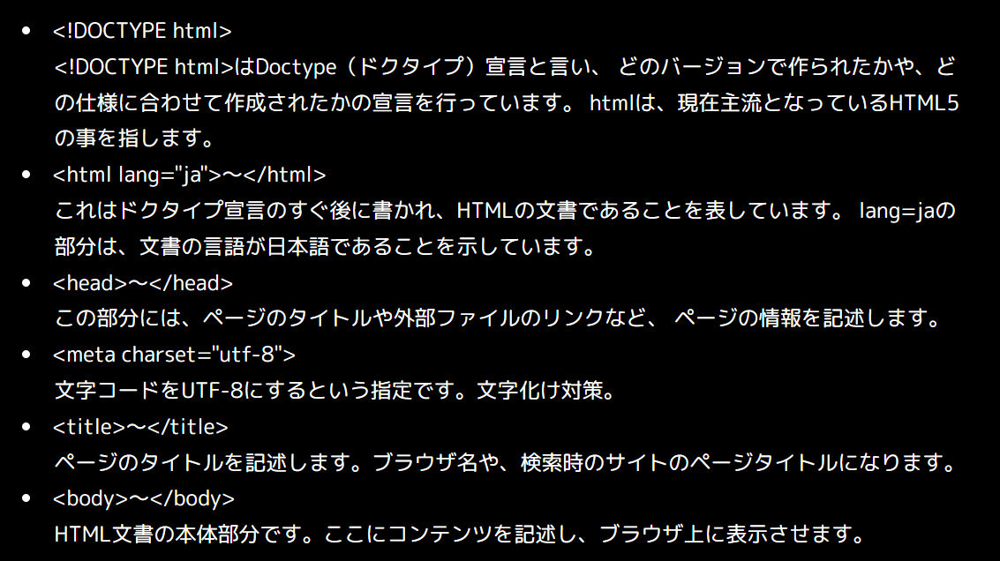
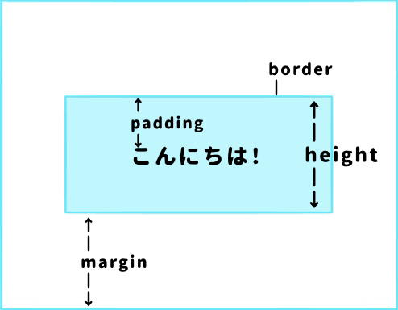

1. そもそもHTMLとは？
HTMLとはWebページを作る上で土台となるファイルを作成する言語です。
表示させたい文章をタグを使って書かれます。
端的にいうと、Webページの中身を設定するのがHTMLです。
➥タグ：見出しやリンクなどを指定して、
コンピューターがそのページの構造を理解できるようにする役割を持つ
{kind=link}
タグの書き方の例(本サイトのHTMLファイル)。img や p などがタグにあたる。
補足: ちなみに、中身を設定するHTMLに対して、見た目を設定するのがCSSです。 CSSを設定しないと、Webページは非常に簡素な見た目となってしまいます。
2. HTMLを体験しよう
早速ですが、HTMLでWebサイトを作ってみましょう！
任意のフォルダでVScodeを起動して、index.htmlというファイルを作成してください。
ファイルを作成したら、以下のコードをindex.htmlに貼り付けて保存しましょう
（「ここに○○を入力」の部分は自由に書き変えていただいて構いません）。
<!DOCTYPE html>
<html lang="ja">
<head>
<meta charset="utf-8">
<title>ここにタイトルを入力</title>
<meta name="discription" content="体験用ページ">
</head>
<body>
<h1>ここに見出しを入力</h1>
<p>ここに本文を入力</p>
</body>
</html>
保存後、index.htmlを右クリックし
Show in Browserをクリックして実際の画面を確認してみましょう。
上手くできていれば、画像のように表示されるはずです。
（画像のフォントが違うのは気にしないで下さい...）
{kind=link}
「取り敢えず出来たけど何書いてるか分からん！」って方もいると思うので、 軽くですが先ほどのコードを解説します。
3. HTMLの骨組み
この章で解説する内容は、Webページを表示するための必須内容です。 これらを記述しないとうまく表示されない場合があるので、必ず記述しましょう。
- <!DOCTYPE html>
<!DOCTYPE html>はDoctype（ドクタイプ）宣言と言い、 どのバージョンで作られたかや、どの仕様に合わせて作成されたかの宣言を行っています。 htmlは、現在主流となっているHTML5の事を指します。 - <html lang="ja">～</html>
これはドクタイプ宣言のすぐ後に書かれ、HTMLの文書であることを表しています。 lang=jaの部分は、文書の言語が日本語であることを示しています。 - <head>～</head>
この部分には、ページのタイトルや外部ファイルのリンクなど、 ページの情報を記述します。 - <meta charset="utf-8">
文字コードをUTF-8にするという指定です。文字化け対策。 - <title>～</title>
ページのタイトルを記述します。ブラウザ名や、検索時のサイトのページタイトルになります。 - <body>～</body>
HTML文書の本体部分です。ここにコンテンツを記述し、ブラウザ上に表示させます。 - <meta name="discription" content="～">
ページの説明を記載する部分で、ページタイトルと共に表示される内容です。 必須ではありませんが、記述するとクリック率が向上したりするので書いた方が良いです。
{kind=link}
head部分に書く内容の例。画像ではファビコンやリセットCSSなども記述しています。
(調べたらすぐに出るはずなんで気になる人は検索してみてください)
4. Webデザインとは？
Webデザインとは、Webページの見た目に関する部分を制作することを意味します。
「見た目に関する部分」と言われると、「カッコいい」「かわいい」などの
『オシャレさ』を追及する、と勘違いしてしまうかもしれません。
しかし、オシャレさを追求するあまり、読み手に伝えたい内容が伝わらなければ本末転倒です。
「見た目に関する部分」とは、オシャレさの他に読み手に伝えたいことを
正しく伝えることも含まれます。
デザインとは伝えるための手段で、オシャレに装飾することだけではないのです。
-
ここからはいくつか注意する点を解説しながら、実際にCSSファイルを用いて体験していきます。
同じフォルダ内に、style.cssというファイルを作成して下さい。
- 文字の大きさ、太さ、フォント
ページの文字が極端に小さかったり、太い字で書かれていたり、 読みにくいフォントで書かれていたらどう思いますか？ そんなページに出会ったら即別のページを探すと思います。
あまりにも極端な例。仮にこんなページたまったもんじゃないですね。
以下に画像のようなサンプルコードを示すので、いじってみて程よい文字の設定を見つけてみて下さい。 - 色合いに注意する
色合いが悪い例として、以下に示すような画像が挙げられます。

前述の通り、文章が読みにくいと読み手はすぐにページを離れてしまいます。 画像は極端な例ですが、読みにくい色合いは意外と存在します。 読み手が読んでいても疲れない色合いで構成しましょう。 - 空白が雑
空白が適切に設けられていないと、読み間違えが生じ 正しく読んでくれない可能性があります。
後述している余白がない例。区別しやすいように、敢えて色を変えています。
上の画像のように写真の周りに空白がないと、 非常に読みずらい、苦しい見た目になることが分かると思います。
空白はCSSでmargin、またはpaddingで設定できます。要素間の空白を「margin」、 要素とその枠線までの空白を「padding」で指定できます。 下に記述してあるコードをコピペして、CSSファイルでmarginとpaddingを自由に指定してみましょう。
余談ですが、marginとpaddingを区切る枠線をborder、枠線の高さをheightと呼びます。 
{kind=link}
<!DOCTYPE html>
<html lang="ja">
<head>
<meta charset="utf-8">
<title>サンプルコードです</title>
<link href="style.css" rel="stylesheet">
</head>
<body>
<h1>大きさはfont-sizeで指定します。</h1>
<p>太さはfont-weightで指定します。</p>
<div>フォントはfont-familyで指定します。</div>
</body>
</html>h1 {
font-size: 2rem;
}
p {
font-weight: bold;
}
div {
font-family: "Yu Gothic Medium", "游ゴシック Medium";
}<!DOCTYPE html>
<html lang="ja">
<head>
<meta charset="utf-8">
<title>一枚目の画像です</title>
<link href="style.css" rel="stylesheet">
</head>
<body>
<h1>黒背景に灰色の文字で入力しています。</h1>
<p>非常に文字が読みずらい事が分かると思います。</p>
</body>
</html>html {
background-color: black;
color: #444;
}
/* これはコメントです。
二枚目の画像はbackground-colorをyellow、colorをmagentに指定しています。 */{kind=link}
{kind=link}
<!DOCTYPE html>
<html lang="ja">
<head>
<meta charset="utf-8">
<title>サンプルコードです</title>
<link href="style.css" rel="stylesheet">
</head>
<body>
<div class="item">Item 1</div>
<div class="item">Item 2</div>
<div class="item">Item 3</div>
</body>
</html>.item {
background-color: #0bd;
color: white;
margin: 10px;
padding: 10px;
}5. まとめ
まずはお疲れ様でした。一回聞いて触っただけでは理解できないと思いますし、
説明が不十分な箇所、そもそも説明が行っていない箇所もあります。
というか自分も勉強中なのであまり適切でない説明が行われていたかもしれません。
なので、気になった所・疑問に思った事は検索をかけてみたり質問してみたりしてください。
きっといい答えが返ってきます。
皆さんがWebサイトを作成するときは、是非とも読み手の事を考えて
使いやすいWebサイトを作るよう心がけてみて下さい。
その際に、この講義が少しでもタメになれば幸いです。